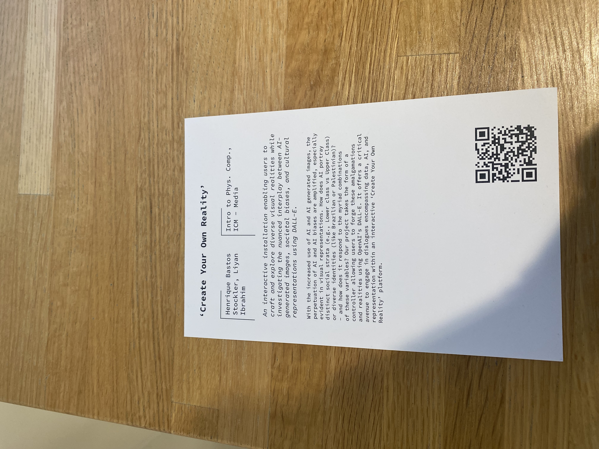
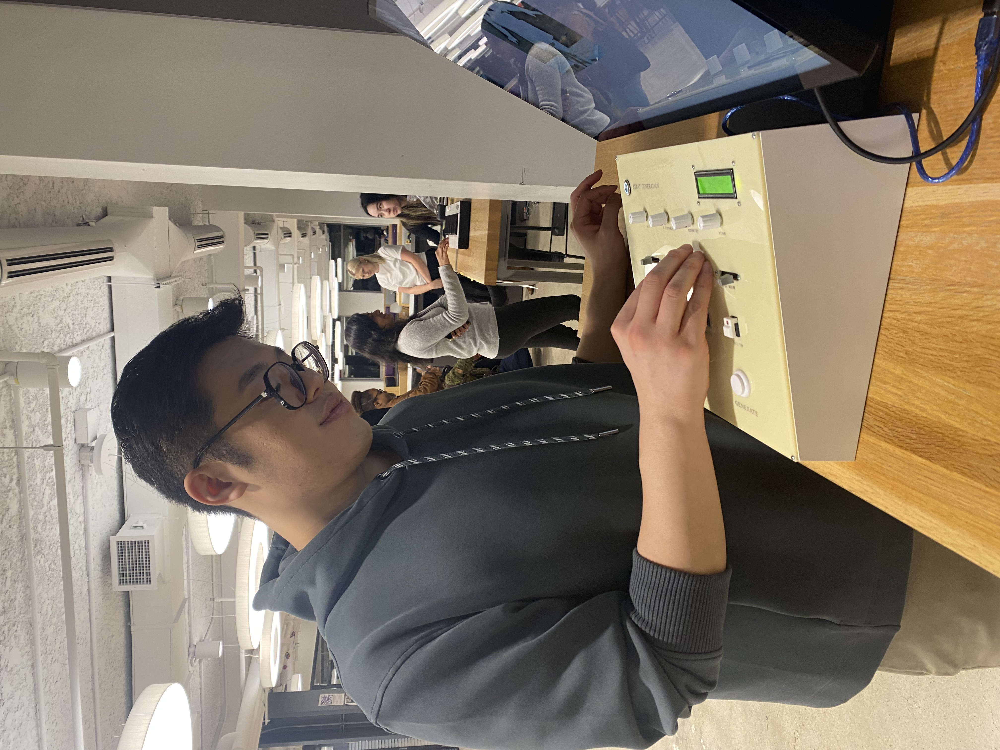
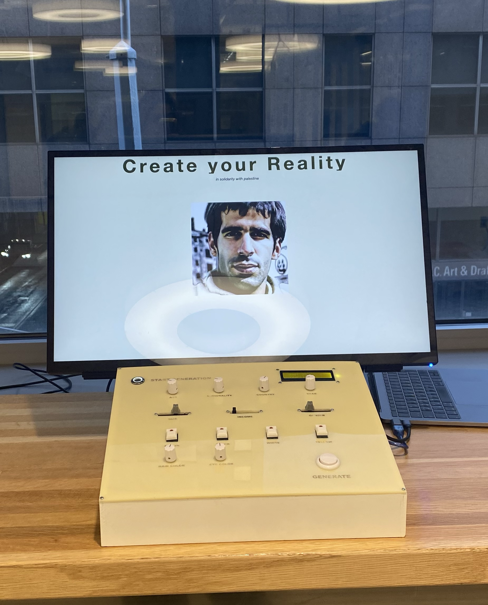

Product Design · AI Generated



Create Your Own Reality is an interactive installation that allows users to explore AI-generated visual narratives, engaging with the biases and cultural representations embedded in machine learning models.
By integrating Arduino, Node.js, and OpenAI's DALL·E API, the project creates a tangible, interactive system where users manipulate AI-crafted imagery in real time. Arduino captures user inputs via physical controls, sending signals to a Node.js backend, which processes interactions and generates visuals through DALL·E API. The web interface updates dynamically, providing real-time feedback for a seamless experience.
Designed for intuitive interaction, the project translates complex themes of data representation, AI bias, and identity into an accessible, user-driven experience. The system encourages critical engagement with AI's role in shaping perceptions of reality while bridging physical computing, AI, and web-based interaction.